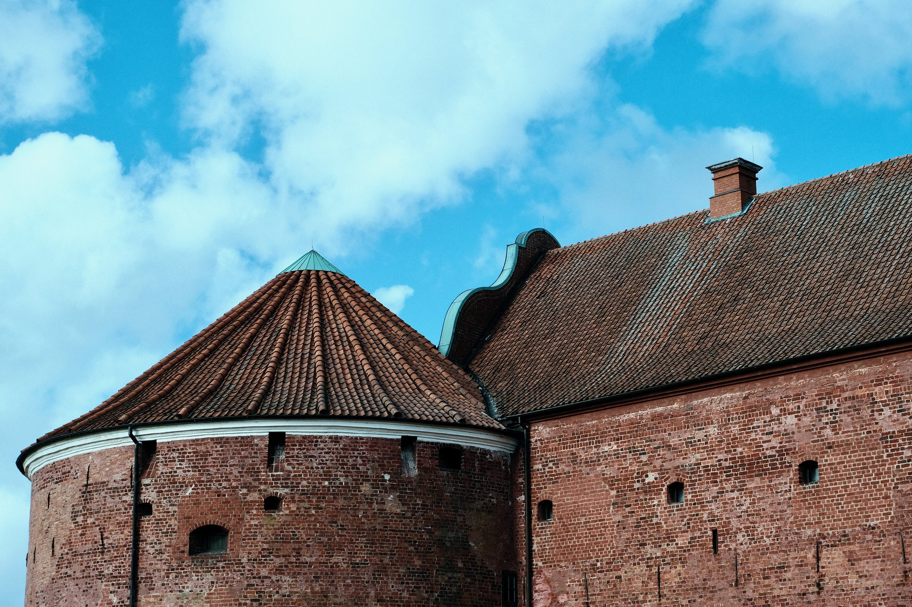

Landskrona Slott stands close to the waterfront in Landskrona, where brick walls, deep moats, and open green spaces create one of southern Sweden’s most atmospheric historic settings. The castle was built in the 16th century, during a period when control of the Öresund region was strategically important. Today, it feels calm and almost restrained, but its architecture still carries the logic of defence, power, and territorial control.

Approaching the castle, the first impression is its strong geometric order. The red brick façades, arched entrances, narrow passages, and heavy walls create a clear sense of permanence. Unlike romantic castle ruins, Landskrona Slott feels practical and disciplined. Its beauty comes not from decoration, but from proportion, material, and the relationship between architecture and landscape.
A Fortress Shaped by the Öresund Landscape
The castle’s surrounding moat is central to its character. Water softens the military form of the fortress, reflecting the walls and opening the space around them. From different angles, the site shifts between castle, island, park, and defensive structure. This balance between strength and stillness gives Landskrona Slott a distinctive Nordic atmosphere.
“Landskrona Slott is not only a castle to look at, but a place to walk through slowly — where brick, water, and silence reveal the layers of history.”
Inside the castle area, details become more intimate. Doorways, stone paths, vaulted passages, and weathered surfaces show how the site has been used, adapted, and preserved over time. Every architectural element feels connected to function: movement, protection, visibility, and control. Yet the present-day experience is peaceful, shaped by walking, observation, and quiet reflection.

Between Defence, Memory, and Modern Calm
What makes Landskrona Slott memorable is the contrast between its original purpose and its current atmosphere. Built for security and military strength, it now invites visitors into a slower encounter with history. The surrounding parkland, water, and open sky make the fortress feel integrated into daily life rather than separated from it.
Walking around Landskrona Slott is a reminder that Nordic heritage is often quiet rather than dramatic. The site does not need to overwhelm the visitor. Its impact comes through repetition and detail: brick against water, shadows under arches, grass-covered ramparts, and the measured rhythm of the castle walls. In this stillness, the past remains present without becoming distant.